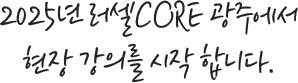

"우리의 꿈을 끌어당길
자석 국어"
국어강민기T
강사 이력
- 現) 러셀 출강 (광주, 대치, 중계, 영통)
- 성균관대 교육학
- 前) 송파 한맥국어학원 고등부 전임
- 前) EZ 국어 연구소 팀장
강의 특징
- ‘독서’ 공부법에 대한 확신을 가지게 됩니다.
- ‘문학’ 기출 분석을 스스로 할 수 있게 됩니다.
- 수능국어에 대한 “확신”과 “자신감”을 가지게 됩니다.
관리 프로그램
- 1일 1독서 Challenge : 수능까지 무료 제공
- 자석국어 연구소: 수능 1등급 전문가 집단의 피드백 제공
- 주간지: 이것만 해도 차고 넘칩니다.
- 카톡 레포트: 성취도, 과제 관리 수능도 역시 관리합니다.
연간 커리큘럼
| 1~2월 | Time To Dream <기본,기출분석> |
|---|---|
| 3~4월 | Attract To Dream <심화, EBS수특> |
| 5~6월 | 6평 대비 & 분석 |
| 7~8월 | Get To Dream <완성, EBS수완> |
| 9~11월 | Land To Dream <파이널;이감> |
"올바른 국어의 길을
함께 걸어갑시다."
국어송윤태T
강사 이력
- 現) 양지 메가스터디 기숙학원 국어 강사
- 前) 서초 메가스터디학원
강의 특징
- 평가원 기출 지문 집중 분석
- 국어의 시작과 끝은 ‘독해력’, 수능 국어에 최적화된 독해 능력 만들기
관리 프로그램
- 과제 제공 (추가 기출 무제 + 실전 감각 미니 모의고사)
- 복습 추가 문제(매주 수업 후), 다음 수업 내용 예습
- 대면 / 비대면(밴드 등) 상담을 활용해 학습 방향 제시
- 각종 모의고사 실시 후 시험 운영 방안 제시
연간 커리큘럼
| 1~2월 | 독해 코드 01수능 독해 방법론 |
|---|---|
| 3~5월 | 독해 코드 02(확장편)독해 방법 확장/적용 |
| 6~8월 | '국어의 길'실전 N제 - 문제.zip |
| 9~11월 | '국어의 길' 파이널 적중 모의고사 |
"내신부터 수능까지
완벽 학습!"
수학박주혁T
약력
- 現) 러셀 기숙 출강
- 연세대학교 졸업
강의 특징
- 스킬이 아닌, 개념의 확장
- 수업 전 모의고사 진행
관리 프로그램
- ETK 자료 제공
- 라이즈 모의고사, 퀄 모의고사 제공
- 수업 전, 쉬는 시간 밀착 상담
연간 커리큘럼
| 1~2월 |
수1수2개념 실전개념 완성 |
|---|---|
| 3~4월 |
미적분 실전 개념+공통영역 준킬러 |
| 5월 |
6평대비 모의고사(4회) |
| 6월 |
공통+미적분 준킬러 문풀 |
| 7~8월 | FINAL Season1. |
| 9~10월 | FINAL Season2. |
" 강한 수학, 이유있는 풀이 "
수학손원재T
강사이력
- 現) 러셀 기숙 출강
- 고려대학교 수학과
- 고려대학교 수학교육 석사
강의 특징
- 테마 별 실전 개념
- 기출 문제를 통한 연습과 기출 변형 문제 풀이
- 개념에 대한 정확한 이해와 정도로 풀이
- 연계된 변형문제를 활용한 문제 풀이 훈련
관리 프로그램
- TEST를 통한 상시 실력체크
- 주간 학습계획 및 주간지 제공
- 전 수업 복습 강의영상 제공
- 반복 연습과 약점체크를 통해 성적 향상
연간 커리큘럼
| 1~2월 | 실전 개념 및 기출정리 |
|---|---|
| 3~4월 | 테마별 문제풀이 |
| 5월 | 테마별 문제풀이 |
| 6월 | N제로 실전연습 |
| 7~8월 | N제로 실전연습 |
| 9~10월 | 실전 모의고사 |
"개념하면 단.무.지 MR. YI"
수학이용욱T
약력
- 러셀 러셀 광주학원 재원생 만족도 4.92(1위)
강의 특징
- 기출 분석을 통한 출제자의 의도 분석
- 출제자의 의도에 맞는 체계적 접근을 통한 개념 이해
- 반복적 개념 TEST와 유사문항 풀이를 통한 반복 숙달
관리 프로그램
- 개념 영상을 통한 개념 TEST
- TEST 오답의 유사유형 추가 TEST를 통한 내용 숙지
- 연구소 조교들의 ZOOM 질답 운영(미스터리 수학 연구소)
연간 커리큘럼
| 1~2월 | 개념완성(수1) |
|---|---|
| 3~4월 | 기출분석(수1) |
| 5~6월 | Arsenal for killer(수1) |
| 7~8월 | 개념완성(수2) |
| 7~8월 | 기출분석(수2) |
| 9~10월 | 기출분석(수2) |
| 11월 | Arsenal for killer(수2) |
| 1~4월 | 미적분 기출분석+실전개념 |
|---|---|
| 5~6월 | 미적분 BTK |
| 7~8월 |
미적분 실전모의고사 (시즌1, 시즌2) |
| 9~10월 |
미적분 실전모의고사 (시즌3, 시즌4) |
"나랑 하면 된다."
수학조성훈T
약력
- 現) 러셀 기숙, 대전 출강
- 서강대 교육대학원 수학교육
- 2023년 러셀 강사공채 수학 강사평가 1위
- 메가스터디 러셀사업부 강사육성원 수학 강의평가 1위
강의 특징
- 명확한 개념 설명
- 개념에 입학한 문제풀이, 한 눈에 들어오는 판서
- 기본부터 심화까지 단계별 자체교재, 차별화된 모의고사
관리 프로그램
- 개별 학습상담 및 1:1 질의응답
- 과제/테스트 오답에 관한 해설 풀이 영상 제공
- 자체제작 오답 노트로 약점체크, 자기주도 워크북 제공
연간 커리큘럼
| 1~2월 | 수능 개념완성 |
|---|---|
| 3~5월 | 기출완성+EBS 연계교재 |
| 6~8월 | 준킬러 대비 |
| 9~11월 | 실전 모의고사 및 파이널 정리 |
"학생보다 강사가 부지런히 영어, 실천하고 증명하는 영어"
영어김선덕T
약력
- 現) 러셀 대치 출강
- 한국외국어대학교 영어학과 졸업
- 2024년 12월 메가스터디 수능인강론칭 예정
강의 특징
- 직관에 체계를 더하는 실증주의 영어
- 11명의 연구진이 만드는 "창작" 콘텐츠
- 수능 시험 범위내에서의 정석과 SKILL
관리 프로그램
- 시나브로 보카 : 매주 단어 TEST+피드백 제공
- 주간 김선덕 과제물 : 관리 기준[완성될 때까지]
연간 커리큘럼
| 1~3월 |
생각 시리즈 [빈순삽 접근 방법] |
|---|---|
| 5~6월 |
Before&After 6평 [6평 All in] |
| 7~8월 |
압권 [모든 준비 끝] |
| 8~9월 |
Before&After 9평 [9평 All in] |
| 9~11월 |
The End [파이널] |

"COMAPACT 개념 세밀하고 꼼꼼한 클리닉"
화학김재권T
약력
- 現) 러셀 강남,기숙 출강
- 한국교원대학교 화학교육 졸업
강의 특징
- 체계적인 개념+Compact한 내용 정리
- 평가원과 수능 기출을 활용한 개념과 문제 연결고리 학습
- 고효율 문풀 Tip
관리 프로그램
- 수업 후 개별 피드백 진행
- Band를 이용한 보강 동영상 제공
연간 커리큘럼
| 1~2월 | 지름길 개념완성 |
|---|---|
| 5~6월 | 지름길 기출문풀 |
| 7~8월 |
EBS 교재 마스터 [수특,수완 지름길 문풀] |
| 8~9월 |
3 Cycle 풀세트 타임어택 7월-29분 타임어택 8월-27분 타임어택 9월-25분 타임어택 |
| 9~11월 | 파이널 모의고사 |
"뇌 과학의 학습 원리"
생명과학황민준T
약력
- 現) 러셀 강남, 기숙 출강
- 서울대학교 생물교육과 졸업
- 2024년 12월 메가스터디 수능인강 론칭예정
강의 특징
- 어떤 문제가 나와도 풀 수 있는 잠재력을 길러주는 강의
- 이론과 실전문제풀이 배함, 나올 수 있는 여러 CASE 연습
- 수업시간 Daily TEST, 서울대 생물교육과 전공자의 노하우 습득
- 뇌 과학을 기반으로 한 학습법 제시
관리 프로그램
- 간단한 질문의 카카오톡, 문자로 상시 답변
- 학습 상담이나 문제풀이 1:1지도
연간 커리큘럼
| 1~2월 | 유전 SSAP |
|---|---|
| 3~4월 | 비유전 FLEX |
| 5~6월 | 기출폭탄 |
| 7~8월 | 핵심엄선 450제 |
| 9~11월 | 적중 모의고사 |
"Back to basic 기본 개념부터 단단하게"
지구과학양이석T
약력
- 現) 러셀 기숙 출강
- 연세대학교 지구천문대기학부 박사 수료
강의 특징
- 지구과학이 처음인 학생도 수강가능
- 암기 부분과 논리적 연결로 이해가 필요한 부분을 정확하게 전달
- 암기화 이해에 도움이 되는 다양한 시청각 자료 제공
관리 프로그램
- 매주 30분 주간 실전 TEST와 양질의 과제 제공
- TEST 성적 및 수업 특이사항 문자 발송
- SNS를 통한 24시간 질의응답 및 개별 면담 진행
- 수업 복습 영상 제공
연간 커리큘럼
| 1~3월 |
WINTER 기본개념 [지엽부터 킬러까지] |
|---|---|
| 4~6월 |
SPRING 심화개념 [고난도 기출, 기출예상] |
| 7~8월 |
SUMMER re-analysis [수능연계 교재 완벽해부+ 고난도 N제 연습] |
| 9~11월 |
AUTUMN? AWESOME! [최신 기출 경향 반영 모의고사] |